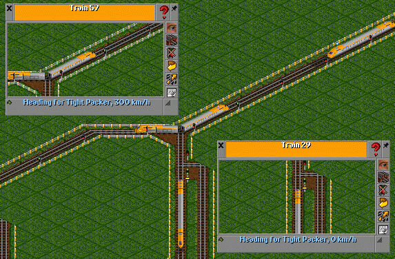
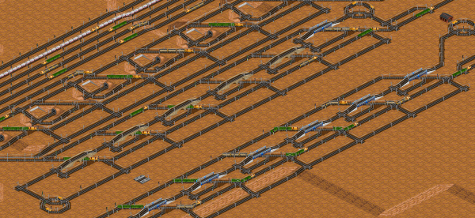

Efficient stations and tight packed train streams
This is about efficiency and dealing with OpenTTD quirks, about achieving maximum throughput with minimal line width, about optimization and simple yet effective #openttdcoop style magic… basically, it’s about things I like and which make me come back to this game over and over again ;o)

So let’s talk about stations… it is basic TTD element… every player made some… some designs were fancy and some ugly… most working (i hope ;). Some stations are bigger than others, a network wide dedicated drop or pickup would be an example. For obvious reasons such stations, in terms of number of platforms, are wider (or much wider) than lanes within the network the station is hooked to and that posses two tasks competent engineer should handle. These tasks are designing station entry and exit.
I would like to direct your attention to exit from megastations; First, it is usually a more complex task, since not being able to move trains after they been served – clogs the station and network itself rather quickly. And, on the other hand, train stream with totally random spacing is hurting network performance due to the fact that more spacing means less trains per lane and a need to upgrade amount of lanes while at same time it also is damaging factor to ability for merging traffic to find gap to get onto the net. And that’s where new concept comes to play… it is a network contraption which merges trains in a way which creates more efficient train spacing and hence better train stream.
There has been 2 concepts mentioned on PS games. The are “compressor” by Mark and “packer” by yours truly. They appear to do similar things but are to be used differently. And usage depends greatly on type of network/station they are attached to.
Compressor acts based on slowing down randomly spaced trains and grouping them together to be released as a pack with minimal intervals inbetween. This is essential for most networks and should be done in case if traffic merges into lanes, because single larger gap instead of many smaller ones means easier entry, but at same time it relies on having available room on the lane it operates on, as in if there are too many trains, stopping them would mean stopping the ML. In station context compressor can and often should be applied to exit from pickup stations, reason being – trains leaving pickups are often go in waves due to fluctuations of production (and many other factors), thus organizing these waves can be a real saver for busy network with lots of merging traffic. PSG#131 has functional example of Mark’s compressor on few lanes of ML: 

Packer while being pretty much same by design acts a bit different. The goal of packer is absolutely streamline train packing process to extreme, it produces train stream with no gaps as long as station provides enough trains. After such process these lines are literally impossible to merge into, hence applicable usage is very different – packers should not be used for affecting lanes where trains are supposed to merge often, it will lead to SL bottlenecks once packer kicks into highest gear. That being said, a perfect place and role for a packer is optimizing train stream going from network drop, on network with empty/full track separation, one of best example would be SRNW – aside from overflow injection, dummy trains don’t ever join to lanes that go from drop. A working example of such application can be seen in PSG#170, where a very ugly, but functional version of packer deals with 3 lanes of incoming traffic (badly spaced due to merging) compressing them into 2 tight packed lanes.
After thinking about how tiresome is the process of combining network elements to slow down trains in order to achieve desired merging pattern, I decided to do it simple way and integrate it into station:

There is also a savegame available with working example of this packer, but due to OpenTTD bugs and tight packed stream hitting the station on the other side of the loop there are some issues with station entry as well as “FS1063-safe curves” had to be used in order to maintain gaps between trains. Station size for a single lane is also quite unusual since it has 10 platforms, but that was necessary do demonstrate the efficiency of such device.
Core basis of this packer is spacing station in a way applicable for how trains need to be spaced on ML, essentially for proper function minimal gaps between trains should be 2 signal intervals (2×2=4 tiles for most coop games) and hence 4 tiles between stations give you desired spacing while timed release is powered by a ticker train which run on schedule. This is hardest part – you actually have to figure out how many ticks trains should wait on station before second batch should be release w/o running into trains from previous set, so some testing is required. The release mechanism is also main design difference from compressor which is “capacity” operated with gate logic holding trains in place while pack assembles.
The point i am trying to stress – in most cases performance of network can be greatly affected by producing more efficient train streams and compressor and packer while being similar by nature should be used with caution since they do produce very different results.
Categories: Development, Gameplay, OpenTTD